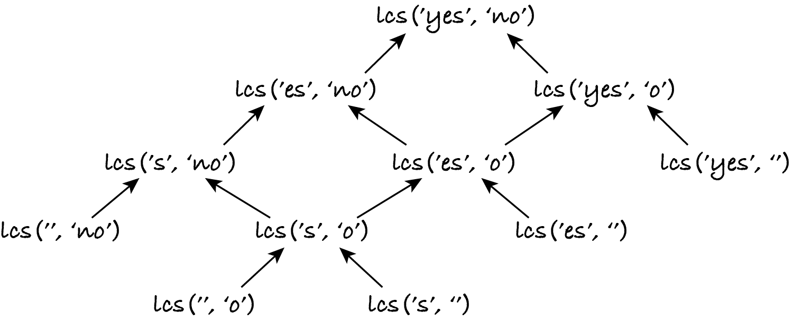
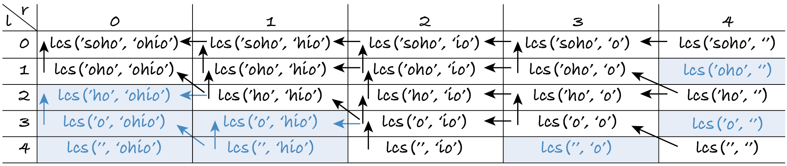

23.2. Longest common subsequence
As explained in Sections 4.1.2 and 4.6.1, substrings and subsequences are zero or more items taken from a given sequence, without changing their order. A substring (also called a slice) contains consecutive items from the sequence, whereas a subsequence doesn’t have to. Every substring is a subsequence, but not every subsequence is a substring. For example, (1, 2) is a substring and a subsequence of (1, 2, 3), whereas (1, 3) is a subsequence but not a substring, because 1 and 3 don’t appear consecutively in (1, 2, 3).
This section further illustrates dynamic programming with the longest common subsequence (LCS) problem: given two sequences A and B, we want a longest of all sequences that are both a subsequence of A and a subsequence of B. For example, the LCS of (1, 3, 5, 7, 9, 11) and (2, 3, 5, 7, 11, 13) is (3, 5, 7, 11). Some sequences have several longest common subsequences, e.g. (1, 2, 3, 2) and (3, 2, 1, 2) have three LCS: (1, 2), (2, 2) and (3, 2). Our algorithm will return one of them.
The LCS is an indication of how similar two sequences are. For example, the Linux diff command (introduced in TM129) and word processors can compare two versions of a text file and show which lines were added and removed between the versions. They use quite sophisticated algorithms but one simple way to solve that problem is to determine which lines haven’t changed, i.e. are common to both versions. Since new lines of text can be inserted between existing lines, the lines of the original
file may not appear consecutively in the new file, so we must look for a subsequence, not a substring.
As an example, let the original file be the sequence of lines (A, B, C, D) and let the new file be (B, E, D, C, F). Each letter represents the content of one line. Line A was removed, lines C and D were swapped and lines E and F were added.
Every line of the original file that isn’t in the LCS was removed and every line of the new file that isn’t in the LCS was added, because those lines aren’t in the common subsequence. Sequences (A, B, C, D) and (B, E, D, C, F) have two LCS: (B, C) and (B, D). Both show that line A was removed and lines E and F were added. If the output is (B, C) then this means line D was removed from after C and added before C. If the output is (B, D) then it’s line C that is considered to have moved from before D to after D.
Another application of the LCS problem is in bioinformatics. We can represent a DNA strand as a string of the letters A, C, G and T. Computing the LCS (or some other similarity measure) of two strands allows scientists to find out if two genes have the same function, if one species evolved from another, if two people are related, etc.
In summary, the LCS and similar problems that involve comparing two sequences have many applications and they are often solved with dynamic programming.
In the rest of this section, to make the examples shorter to type, I will only use sequences of characters (strings). I’ll call the two input strings left and right.
Here are some tests. Feel free to add your own. Make sure there’s only one LCS for each test, otherwise your algorithm may pick a different LCS and fail the test.
[1]:
from algoesup import check_tests, test
DNA_LEFT = "A" * 6
DNA_RIGHT = "GATTACA" * 3 # more A's than DNA_LEFT
lcs_tests = [
# case, left, right, LCS
('one is empty', 'hello', '', ''),
('same string', 'hello', 'hello', 'hello'),
('nothing common', 'yes', 'no', ''),
('typical case', 'soho', 'ohio', 'oho'),
('subsequence', DNA_LEFT, DNA_RIGHT, DNA_LEFT),
('substring', 'TACAG', DNA_RIGHT, 'TACAG')
]
check_tests(lcs_tests, [str, str, str])
OK: the test table passed the automatic checks.
23.2.1. Recursive
To obtain a dynamic programming solution, we must start with a recursive definition of the problem. At this point you may wish to read again Section 12.8 and skim Sections 12.3 and 12.5 to remind yourself how sequences are processed recursively.
As usual, I start by thinking of the bases cases. The smallest problem instances are always base cases because they can’t be further decreased. The inputs of the LCS problem are strings, so the base cases are when either or both strings are empty. If one string is empty, it has no common characters with the other string, so their LCS is the empty string.
if left or right is empty: lcs(left, right) = ‘’
If neither string is empty, we can separate each one into a head (the first character) and a tail (the rest of the string). There are only two possible cases: their heads are the same or they differ.
If both strings have the same head, i.e. start with the same character, then that character is common to both and we must include it in the LCS. (If we ignored this common character, we wouldn’t get the longest subsequence.) The LCS will be that character followed by the LCS of the tails, e.g. the LCS of ‘hello’ and ‘hill’ is ‘h’ followed by the LCS of ‘ello’ and ‘ill’.
if head(left) = head(right): lcs(left, right) = head(left) + lcs(tail(left), tail(right))
Since both heads are equal, I could have used head(right) instead of head(left). The + operator means concatenation in this context.
If the two heads are different, what should we do? Let’s look at some examples. When computing the LCS of ‘soho’ and ‘ohio’, we must skip the ‘s’ so that we can then match the first two letters of ‘oho’ and ‘ohio’. We have lcs(‘soho’, ‘ohio’) = lcs(‘oho’, ‘ohio’) = ‘oho’. If we instead skip the initial ‘o’ of ‘ohio’, we would get the wrong answer lcs(‘soho’, ‘ohio’) = lcs(‘soho’, ‘hio’) = ‘ho’.
On the other hand, when computing the LCS of ‘AAA’ and ‘GATTACA’, which is ‘AAA’, we can’t skip any As in the left string as all have to be matched to the As in the right string. To sum up, if the two heads are different, sometimes we must skip the left head, sometimes the right head, in order to get the longest output.
How do we know which head to skip, without looking ahead to the rest of the strings? We don’t. When computing the height of a tree recursively, we didn’t know which subtree was taller, so we computed the height of both and took the height of the tallest. Here we must do the same.
if head(left) ≠ head(right): lcs(left, right) = longest of lcs(left, tail(right)) and lcs(tail(left), right)
If skipping either head leads to common subsequences of the same length, then we can pick either of them. The resulting LCS will depend on which head is skipped, but it will always have the same maximum length. For example,
lcs(‘aba’, ‘baca’) = lcs(‘ba’, ‘baca’) = ‘ba’ if we skip the left head
lcs(‘aba’, ‘baca’) = lcs(‘aba’, ‘aca’) = ‘aa’ if we skip the right head
but both LCS have the maximal length of 2.
Exercise 23.2.1
Complete the following function and test it. The m269_rec_list.py file has functions head and tail that allow your code to closely follow the recursive definition. If you prefer, use ...[0] and ...[1:] instead.
[2]:
%run -i ../m269_rec_list
def lcs(left: str, right: str) -> str:
"""Return the longest common subsequence of both strings."""
# if one or both strings are empty:
# return the empty string
# elif both heads are equal:
# return the head concatenated with the LCS of both tails
# else:
# compute the LCS when skipping the right head
# compute the LCS when skipping the left head
# return the longest of the two
test(lcs, lcs_tests)
%timeit -r 3 lcs(DNA_LEFT, DNA_RIGHT)
23.2.2. Top-down
Before we invest effort in developing a dynamic programming solution, we should check whether it’s worth it: are any subproblems repeatedly solved? Let’s draw the DAG of the problem instances and their dependencies for input strings ‘yes’ and ‘no’.
As the DAG shows, there are overlapping subproblems, e.g. lcs(‘es’, ‘no’) and lcs(‘yes’, ‘o’) overlap on common subproblem lcs(‘es’, ‘o’). Common subproblems arise from the multiple ways to reach the same tails of the initial input strings, by skipping characters from the left and right strings a in different order. For example, lcs(‘es’, ‘o’) is solved twice: first by skipping ‘y’ then ‘n’, and second by skipping ‘n’ then ‘y’.
This means that instance (‘s’, ‘o’) is solved three times:
lcs(‘yes’, ‘no’) ⟵ lcs(‘es’, ‘no’) ⟵ lcs(‘es’, ‘o’) ⟵ lcs(‘s’, ‘o’)
lcs(‘yes’, ‘no’) ⟵ lcs(‘yes’, ‘o’) ⟵ lcs(‘es’, ‘o’) ⟵ lcs(‘s’, ‘o’)
lcs(‘yes’, ‘no’) ⟵ lcs(‘es’, ‘no’) ⟵ lcs(‘s’, ‘no’) ⟵ lcs(‘s’, ‘o’)
This in turn means that both leaf instances in the bottom row are also solved three times each. More generally, the number of times an instance is solved is the number of different paths from (‘yes’, ‘no’) to it. (Remember that recursion follows the DAG edges backwards.)
Caching the results for subproblems avoids repeated recursive calls. For example, the second time lcs('es', 'o') is called, the cache is looked up and no calls to lcs('s', 'o') and lcs('es', '') are made.
Exercise 23.2.2
Paste a copy of your code for the previous exercise into the auxiliary function below and modify it to use the cache dictionary.
[3]:
%run -i ../m269_rec_list
def lcs_topdown(left: str, right: str) -> str:
"""Return the LCS of both strings using top-down dynamic programming."""
def lcs(left: str, right: str) -> str:
"""Auxiliary recursive function."""
# if problem instance (left, right) isn't in cache:
# compute LCS recursively and store it in cache
# optional: print the cached value to see how the cache is filled
# return the cached LCS for left and right
cache = dict()
return lcs(left, right)
If you add a print statement I recommend you only run
[4]:
lcs_topdown("yes", "no")
and check the order in which the solutions are cached against the DAG above. Then comment out the print statement and run the next cell. The run-time should be lower than for the original recursive version.
[5]:
test(lcs_topdown, lcs_tests)
%timeit -r 3 lcs_topdown(DNA_LEFT, DNA_RIGHT)
23.2.3. Recursive with indices
Before proceeding to the bottom-up version, let’s improve the efficiency of what we have. As noted in Section 12.6, we should avoid slicing in every recursive call and use indices instead.
For this problem two indices suffice, each pointing to the current head. I will use single-letter names l and r for the indices, because more descriptive names like left index make the recursive definition too verbose and harder to read, in my opinion.
Function lcs(l, r) will compute the LCS of the left string from index l onwards and of the right string from index r onwards. To obtain the LCS of both strings from the start, we compute lcs(0, 0).
The bases cases are when there’s nothing more to process in either string, which happens when either index reaches the end of the corresponding string:
if l = │left│: lcs(l, r) = ‘’
if r = │right│: lcs(l, r) = ‘’
The recurrence relations remain the same, just written differently. The head of a string is the character at position l or r. The tail of a string comprises the characters from the next position: l+1 or r+1.
if left[l] = right[r]: lcs(l, r) = left[l] + lcs(l+1, r+1)
otherwise: lcs(l, r) = longest of lcs(l, r+1) and lcs(l+1, r)
Exercise 23.2.3
Implement the new recursive definition and run it. The run-time should be lower than in Exercise 23.2.1 (with slicing) and higher than in Exercise 23.2.2 (with cache).
[6]:
def lcs_indices(left: str, right: str) -> str:
"""Return the LCS of left and right using indices, not slicing."""
def lcs(l: int, r: int) -> str:
"""Return the LCS of left[l:] and right[r:].
Preconditions: 0 ≤ l ≤ len(left) and 0 ≤ r ≤ len(right)
"""
pass
return lcs(0, 0)
test(lcs_indices, lcs_tests)
%timeit lcs_indices(DNA_LEFT, DNA_RIGHT)
23.2.4. Top-down with matrix
Like for the Fibonacci problem, we can use arrays instead of hash tables. By changing the inputs of the recursive function from strings to integer indices, the cache can be implemented as a matrix: cache[l][r] is the LCS for strings left[l:] and right[r:]. Since l and r start at zero and go up to the length of the strings, the matrix has │left│ + 1 rows and │right│ + 1 columns.
To understand how the matrix cells depend on each other, we must look at the recurrence relations. Here they are again, with the irrelevant info left out:
if …: lcs(l, r) = … lcs(l+1, r+1)
…: lcs(l, r) = … lcs(l, r+1) and lcs(l+1, r)
From this we can see that cache[l][r], which is lcs(l, r), may depend on cache[l+1][r+1] or on cache[l][r+1] and cache[l+1][r]. The value of the matrix cell at row l and column r depends on values that are in the next row l + 1, or in the same row l but in the next column r + 1.
Here’s the DAG of dependencies for inputs ‘soho’ and ‘ohio’, shown as it’s stored in the matrix. As we go down the rows (l increases), we skip letters in the left string; as we go right in the columns (r increases), we skip letters in the right string. If the letters at indices l and r are the same, the algorithm skips that letter in both strings, and so those cells depend on the cells diagonally below: cache[l+1][r+1].
If instead the letters are different, the cell depends on two other cells. For example, the value in row 0, column 2, is the LCS of ‘soho’ (no letters skipped in the left string) and ‘io’ (two letters skipped in the right string). The LCS in that cell is the longest of the LCS in the two cells immediately below and to the right (cache[l+1][r] and cache[l][r+1]) because ‘soho’ and ‘io’ don’t start with the same letter.
The empty cells are never filled by the top-down algorithm. Which cells are left empty depends on the input strings, but the recursive calls always start in the top left corner (row 0, column 0). Each call either makes one further recursive call to fill the cell diagonally below or makes two recursive calls to fill the cells below and to the right. The cells in the last row and column store the LCS of the base cases: at least one string is empty.
Now that you’ve seen how the top-down algorithm works, implement it.
Exercise 23.2.4
Copy your lcs auxiliary function from Exercise 23.2.3 and add a matrix cache. I’ve initialised the matrix for you with None. We can’t use the empty string as that’s a valid LCS value.
[7]:
def lcs_topdown_matrix(left: str, right: str) -> str:
"""Return the LCS of both strings using top-down dynamic programming."""
def lcs(l: int, r: int) -> str:
"""Return the LCS of left[l:] and right[r:].
Preconditions: 0 ≤ l ≤ len(left) and 0 ≤ r ≤ len(right)
"""
# if lcs(l, r) isn't in cache:
# compute it recursively and store it in cache
# optional: print the cached value
# return the cached lcs(l, r)
cache = []
for row in range(len(left) + 1): # noqa: B007
cache.append([None] * (len(right) + 1))
return lcs(0, 0)
If you add a print statement I recommend you only run
[8]:
lcs_topdown_matrix("soho", "ohio")
and check the order in which the matrix is filled against Figure 23.2.2 to confirm it follows a topological sort. Then comment out or remove the print statement and run the next cell. You should obtain the lowest run-time so far.
[9]:
test(lcs_topdown_matrix, lcs_tests)
%timeit lcs_topdown_matrix(DNA_LEFT, DNA_RIGHT)
23.2.5. Bottom-up
As we’ve seen above, when describing the top-down approach, each cell in the matrix either depends on
zero cells, if it’s a base case (bottom row and right-most column)
one cell diagonally below to the right, if both substrings start with the same letter
or two cells to the right and below, if the substrings start with different letters.
The next figure shows the completely filled matrix. The shaded cells are the cells that the top-down algorithm didn’t fill because they don’t contribute to solving lcs(‘soho’, ‘ohio’): there’s no path of dependencies from those cells to the top left cell.
In the bottom-up approach we need to fill the matrix so that when a cell is computed, the cells it depends on are already filled. Since a cell depends on cells below and to the right, this means we must fill the cache from the last to the first row and, within each row, from the last to the first column.
[10]:
def lcs_bottomup(left: str, right: str) -> str:
"""Return the LCS of both strings using bottom-up dynamic programming."""
# create cache as in top-down approach
cache = []
for row in range(len(left) + 1): # noqa: B007
cache.append([None] * (len(right) + 1))
# compute LCS bottom-up
for l in range(len(left), -1, -1): # last to first row
for r in range(len(right), -1, -1): # last to first column
if l == len(left) or r == len(right):
cache[l][r] = ""
elif left[l] == right[r]:
cache[l][r] = left[l] + cache[l + 1][r + 1]
else:
skip_left = cache[l + 1][r]
skip_right = cache[l][r + 1]
if len(skip_left) > len(skip_right):
cache[l][r] = skip_left
else:
cache[l][r] = skip_right
# change the next line to see the contents of the matrix for other tests
if left == "soho" and right == "ohio":
for l in range(len(left) + 1):
print(cache[l])
# solution is in top left corner of matrix (l = r = 0)
return cache[0][0]
test(lcs_bottomup, lcs_tests)
%timeit lcs_bottomup(DNA_LEFT, DNA_RIGHT)
Testing lcs_bottomup...
['oho', 'ho', 'o', 'o', '']
['oho', 'ho', 'o', 'o', '']
['ho', 'ho', 'o', 'o', '']
['o', 'o', 'o', 'o', '']
['', '', '', '', '']
Tests finished: 6 passed (100%), 0 failed.
16.3 μs ± 12 ns per loop (mean ± std. dev. of 7 runs, 100,000 loops each)
23.2.6. Complexity and run-time
The complexity of dynamic programming is the number of entries in the cache multiplied by the complexity of computing each entry. The bottom-up approach always computes all entries, while top-down only computes those necessary to solve the given problem instance. In the worst case, the top-down recursive calls also fill the whole cache, so the bottom-up complexity is the same as the top-down worst-case complexity.
For the LCS problem, the matrix has (│left│ + 1)×(│right│ + 1) cells but for complexity purposes we can ignore the +1. Each cell takes constant time to compute if it’s the longest of the strings in the cells below and to the right, or it takes linear time if it’s the concatenation of the head with the string in the cell diagonally below.
The LCS of two strings can never be longer than the shortest string, because it only includes common characters. So the concatenation takes Θ(min(│left│, │right│)) in the worst case.
To sum up, the LCS problem can be solved with dynamic programming in Θ(min(│left│, │right│) × │left│ × │right│) time.
When I ran the various solutions I obtained roughly these times for the LCS of DNA_LEFT and DNA_RIGHT:
recursive: 140 µs with slicing and 80 µs without
top-down: 55 µs with slicing and 30 µs without
bottom-up: 47 µs.
Like for the ‘soho’ and ‘ohio’ example, the bottom-up approach solves all 7×22 subproblems of lcs(‘AAAAAA’, ‘GATTACAGATTACAGATTACA’), whereas the top-down approach only solves the necessary ones, so it is faster in spite of the overhead of recursive calls.
Note: When solving a problem with dynamic programming, you may have to implement both the top-down and bottom-up approaches to see which is faster for your typical problem instances.